Discografía
Conocé más sobre Mike y su música
Te presentamos la discografía oficial de Passenger, año tras año, para que puedas reproducir todas sus canciones en Spotify y disfrutar su camino en la música.
- Wicked Man's Rest - 2007
- Wide Eyes Blind Love - 2009
- Flight of the Crow - 2010
- Divers & Submarines - 2010
- All the Little Lights - 2013
- Whispers - 2014
- Whispers II - 2015
- Young as the Morning, Old as the Sea - 2016
- The Boy Who Cried Wolf - 2017
- Runaway - 2018
- Sometimes it's something, sometimes it's nothing at all - 2019
- Patchwork - 2020
- Songs for the Drunk and Broken Hearted - 2021
- Birds That Flew and Ships That Sailed - 2022
- Si te interesa saber más sobre las historias detrás de sus canciones, hacé click acá para descubrir el significado de cada letra y el por qué de cada palabra detrás de su única obra.
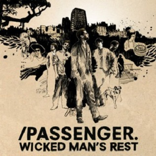
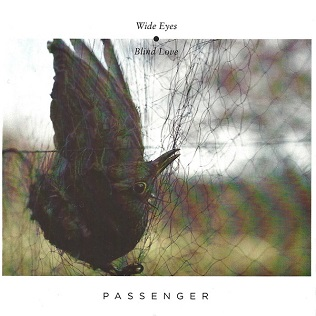
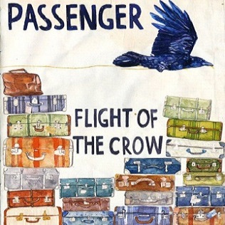
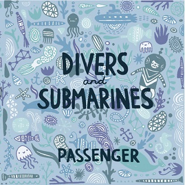
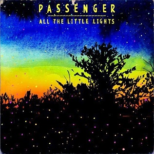
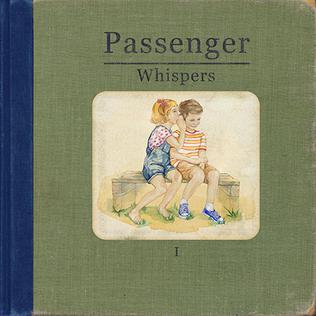
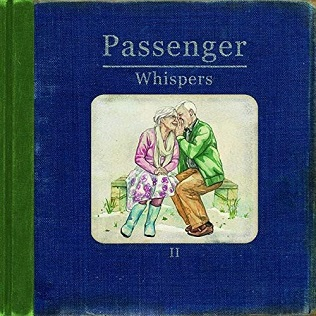

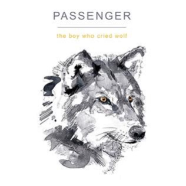
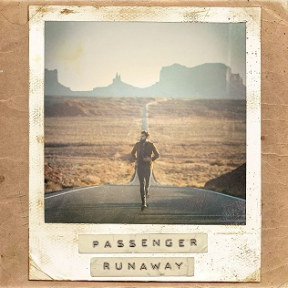
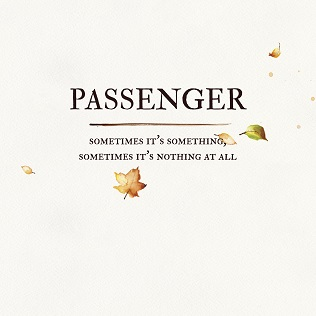
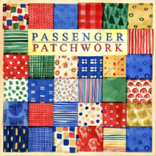
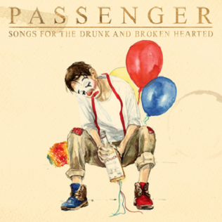
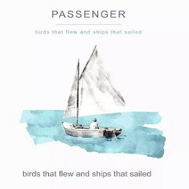